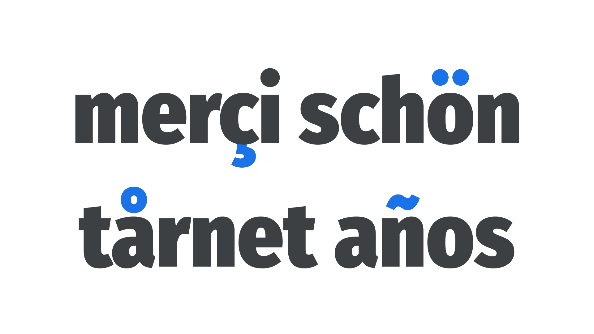

Diacritics, or accent marks
By Google Fonts Knowledge contributors · Google Fonts Knowledge.
Original article · Source on GitHub · CC BY-SA 4.0. Text, illustrations and existing credits reproduced from the licensed Knowledge repository. Open Shelf adapted the layout and links; these adaptations are also CC BY-SA 4.0. No endorsement implied.
Diacritics are small marks that appear above or below glyphs, usually to alter pronunciation. They’re required in many languages, and we must ensure the typeface we’re using includes the diacritics we need for all the languages we need to typeset. Polish, Welsh, and Turkish, for instance, have diacritics absent from many common fonts.

In the French language, pronunciation of the “e” in a word differs depending on whether it appears without a diacritic, with the acute accent (é), or with the grave accent (è).
Diacritics shouldn’t be confused with so-called “foreign” characters; i.e., those not common in English. Diacritics refer only to the extra marks above or below the character, not the entire glyph as a whole. For instance, the Nordic letter “ø” is not simply an “o” with a diagonal bar added as a diacritic—it’s a unique character in itself. (Of course, in terms of its construction by the type designer, it would usually be based on the forms of the “o” character in the typeface.)